The Obligatory
Introduction
Created by Daniel Stonier / d.stonier@gmail.com
Who Am I?
B Science
B Electrical Engineering
Phd. Mathematics
The Many Hats
Mathematician
Lecturer
Control Engineer
Algorithms Monkey
Software Developer
Innovation Team Leader
There And Back Again
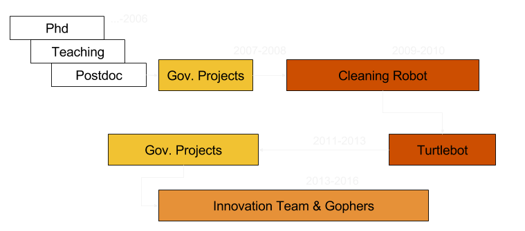Innovating & Architecting
2013-2016
How often do you get to design from scratch and work with a team to implement it?
KickStarting
Don't Complain ....... Do Something About It!
Roles
Founder & Co-Leader
Hiring
Product & Biz Decision Making
Service Design
Technology Direction
Direction
Technology Choices
Framework/Architecture
Requirements
Guided Design
Mentoring
Reviews
Verification & Validation
Collaborations
Firefighting
Core Module Development & Handoff
The Software Vertical
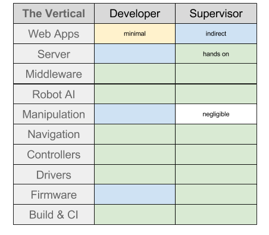Stories
Hands Off (Not the Code...)
BizDev - GoCaf, Love Hotels, Highrise Delivery
Buy-In From Varying SW Groups
The Happy Guy
Supporting Workflows
Acupuncture - Nailing The Pain Points
Zero Configuration
Innovation in Development
Borked (Bent out of Shape) Agile
Minimum Viable Product
The Navi Stack
Behaviour Trees
Podium Simulations
Hands Off
What
Get the right people in the right places ... as much as possible
Point, Stumble & Fall, Pick 'Em Up ... Sometimes the only way
The Gophers That Aren't

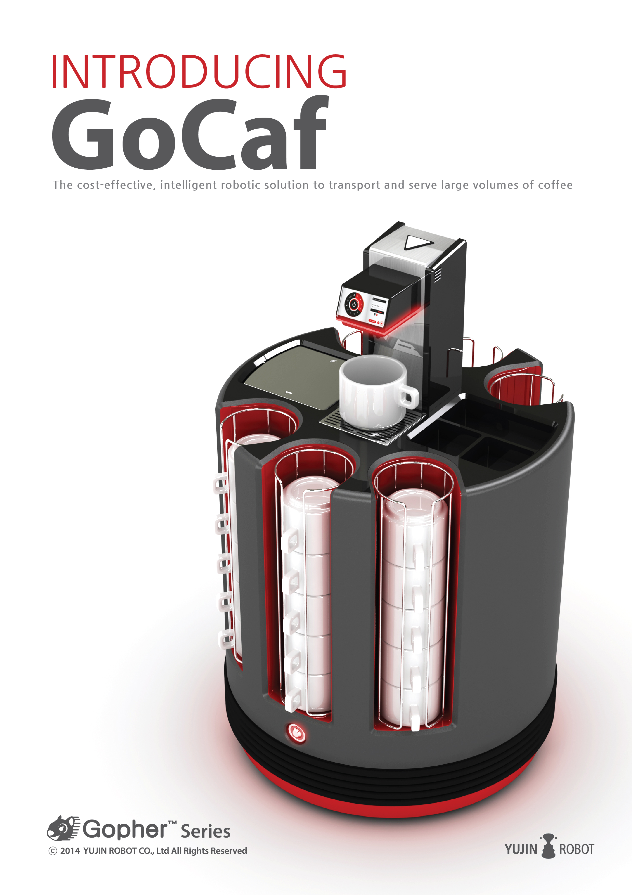 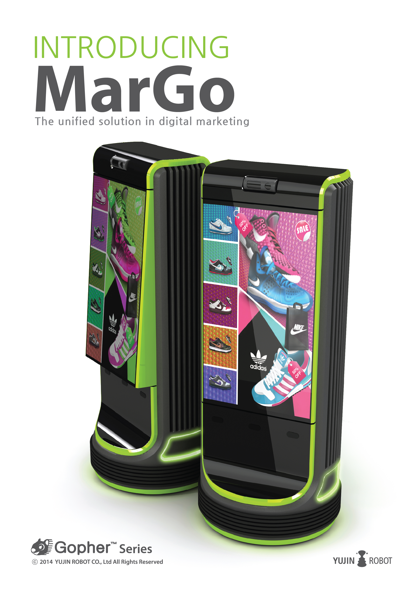 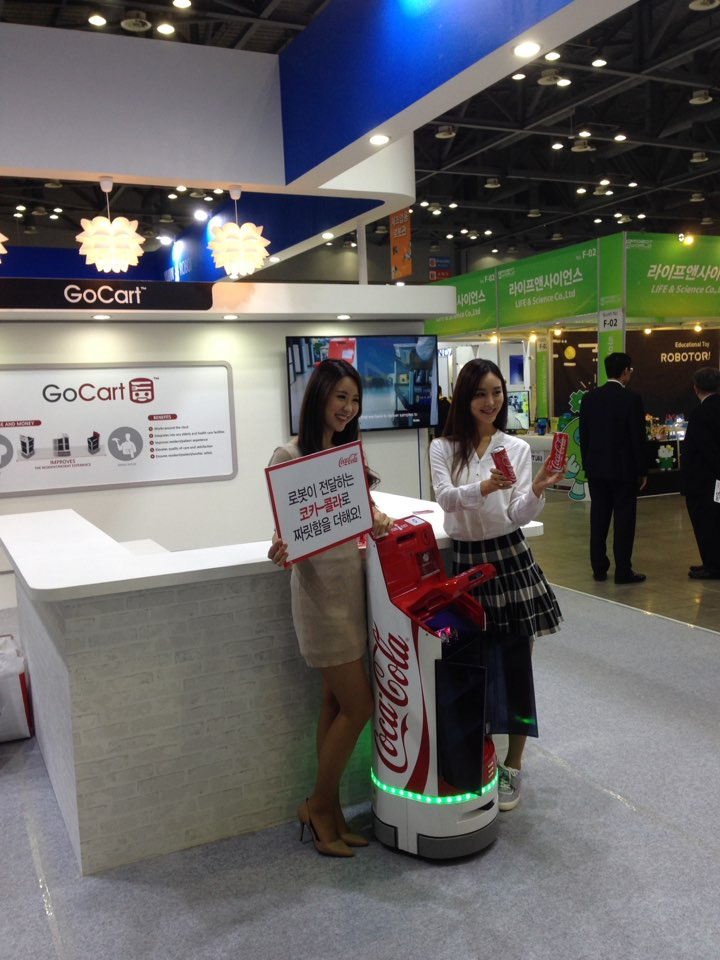
Buy-In
The Happy Guy
Supporting Workflows
Not just design, implement.....make it 'fit'!
Acupuncture
Nail the Pain Points
Target points of wasted manpower ... but also stress points
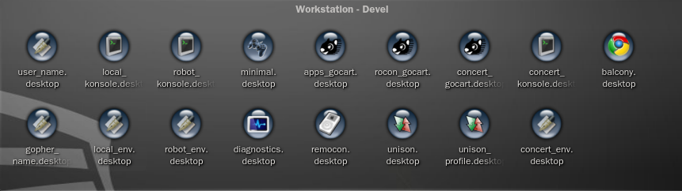Zero Configuration
Robotics is complicated enough
Eliminate or expose only what is necessary
Innovation In Development
No Networking Guy, But We Support Building Wide Fleets?
Borked Agile
Bent Out of Shape
HW is waterfall, SW is agileOur product development is both
Loosely affiliated teams that don't do Agile...
The software vertical
General feeling of 'getting in the way of development'
Borked Agile
What Worked for Our Situation
Divide teams along lines of development overlapDrop complicated 'JIRA' like software
Hide irrelevant noise and planning from each group
BizDev & Service Design → Broad requirements & Constraints
Teams → Architectural reqiurements & Constraints
Sequence
Bump priority for design of
Requirements → Design → Implement → PR → Code Review → Iterate → Docs Cycle
Focus on clarity for Devs
Focus on assisting Devs with their weak points
Focus on being the
Minimum Viable Product
Get Something Usable, As Quickly As Possible

DSlam
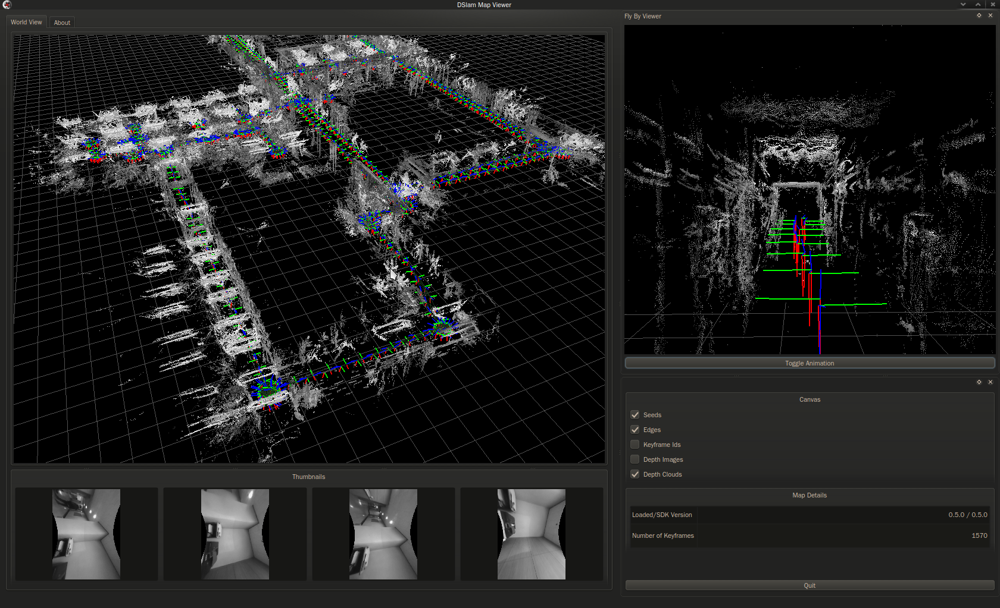Behaviour Trees
Planning
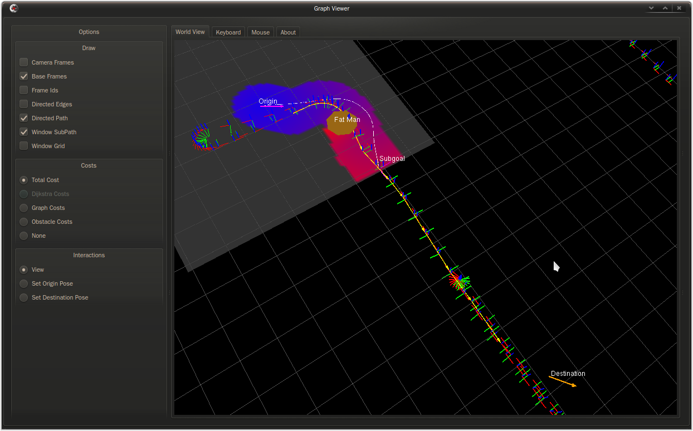Open Source & ROS Community
2008-2016
- OpenCV & many others
- Sophus
(Strasdat@Imperial College) - RosJava
(Damon Kohler@Google) - ROCON
(University of Texas at Austin/OSRF) - Catkin
(Willow Garage/OSRF) - ROS on Windows
(Willow Garage) - Patches for ROS on ARM
(Willow Garage) - Eigen Very Early Days
- 2016 - ROSCon Local Chair
- 2014 - ROSKong Co-Chair
Kobuki & Turtlebot
Project Lead : 2011-2013
First time as a lead
Many hats
Struggled with politics, promises & expectations
Nonetheless, successful project
~10k robots & opened doors for recruiting
Understand what your people can do
Get the right people in the right roles
Kobuki & Turtlebot
Kobuki & Turtlebot
Robotics in Concert
Software Design : 2011-2012
Robot-Human-Device Authoring Framework
Korean Government Consortium
Modules & Concepts → Inno Team
Learned alot about software (not control)**
Business & Dev requirements contribute to architectural requirements
Building blocks can be more important than framework
Korean collaborations are hard...only found success with this later
Handle expectations lest they jump over the moon
Make sure your project has a real target
Background
Use Case Comparisons
Starcraft for Robots
Field Command and Control
Authoring for Human-Robot-Device Interactivity
Remote (High Bandwidth) Control
Riding the Backbone
Background
Getting Out of the Robot
Foreign Relays
Master Sync
Master Sync w/ Bells & Whistles
ROS Serialised Blobs over Specialised Tunnels
ROSBridge
ROSTFUL
Gateways
Hides the ROS Masters
Flipping, Advertising & Pulling Patterns
Auto Discovery
Gateway Requirements
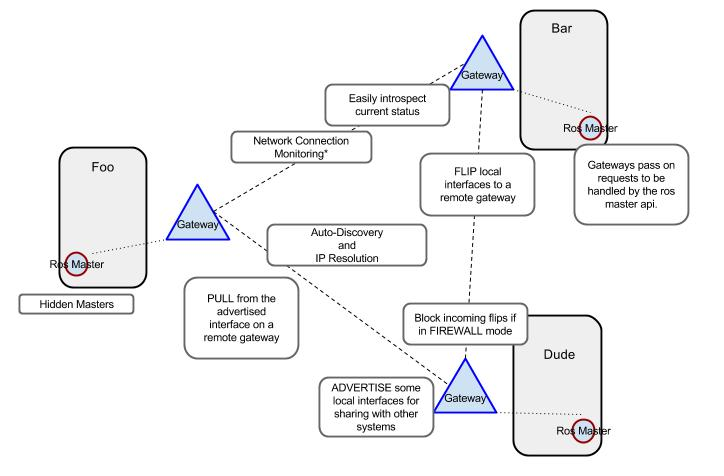Gateway Hub
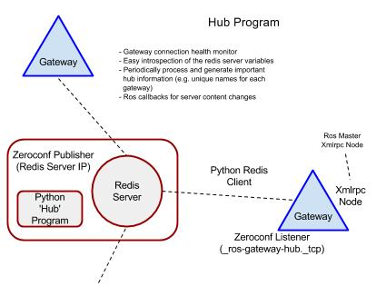Gateway Flips
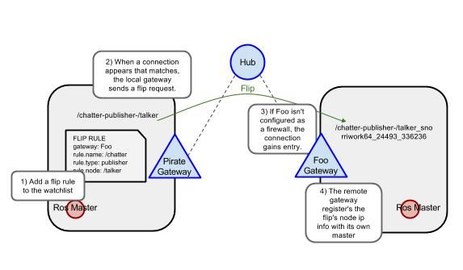Gateway Pulls
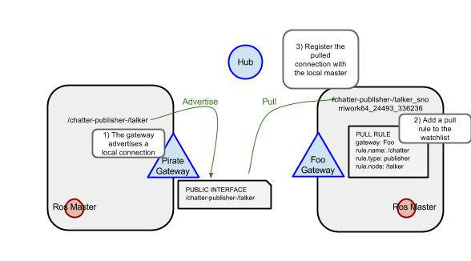Appable Robot
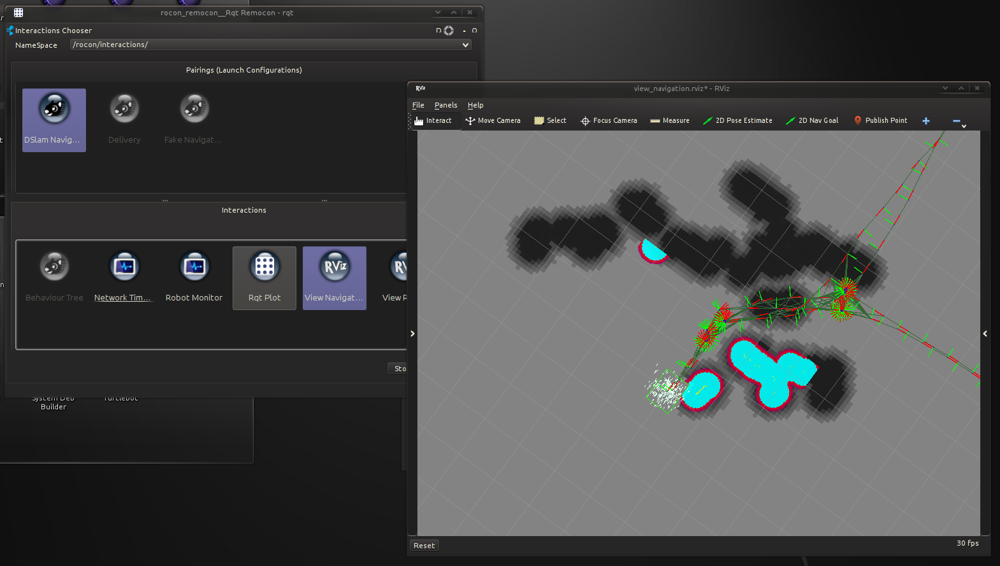
ROCON Concepts
Retasking of Robots
Humans, Devices & Robots as System Resources
System Design ~ OS Design
Centralised Authoring/Scenarios
Concert Design Sketch
To the Whiteboard!
(Some Interesting) Problems
Lost the Groundwork Project
Korean (No)Collaborations
Scheduling is Trickier and More Varied Than You Think
For the Gophers
Concert is more support, less control
No 'scenario' → jobs & job services
Docker packaging
Appable Robot still used for retasking & admin Interactions
Cleaning Robot
Algorithm Development : 2009-2010
Vision Slam
University project → product
Incubated with Phillips
Discovered I like 'just me and the problem'
Discovered I like 'research->product'
Intimidating deadlines didn't phase me too much
Yujin's core robotics product
Partnering with Miele
~100k robots per year